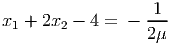

| (1) |
- Is the LP feasible?
- Express the LP in an equivalent form min{cT x : Ax = b,x ≥ 0}. Show that if this problem has a finite optimal value then it has an unbounded set of optimal solutions.
- The dual problem is then max{bT y : AT y ≤ c}. Does there exist a feasible dual solution with (AT y) i < ci for some component i?
- What must g, h, and H satisfy for (1) to have a finite optimal value? What can you say about the set of optimal solutions to (1) in this case?
Solution:
- Yes, since H has full row rank, so the system of equations Hx = h is consistent.
-
Assume x* is optimal. Let
where e is the vector of ones in ℝn. Then x(λ) is feasible in the modified LP for any λ ≥ 0, and cT x(λ) = cT x*. So the modified problem has an unbounded set of optimal solutions.
- Dual problem:
The dual constraints imply HT y = g, so NO, no dual feasible solution satisfying the given condition exists.
- The primal problem is always feasible. So either it is unbounded or has a finite optimal value. It has a finite optimal value if and only if the dual is feasible, that is, if and only if there exists y with HT y = g, that is, if and only if g is in the row space of H. In this case, every feasible solution has exactly the same value.
|
| (2) |
has second stage cost
|
| (3) |
Assume all matrices and vectors are dimensioned appropriately. In class, we discussed solving (2) using the L-shaped decomposition method. In class, we only considered the case where the problem has complete recourse, so the second stage problem (3) is feasible for any x feasible in (2).
How can the method be modified if the assumption of complete recourse does not hold? (Assume the dual LP to the subproblem (3) is feasible.)
Solution:
In the L-shaped method, we choose a first stage decision then solve the dual of the second stage problem in each scenario to find s, and then add the constraint
If the first stage decision is infeasible then there exists a scenario ξs where the dual is unbounded. The dual is
Hence there exists a dual ray with WT ≤ 0 and T > 0. This is always a ray, and the dual subproblem will be unbounded for any x satisfying T > 0. In other words, any x satisfying T > 0 will be infeasible in scenario ξs. Thus, if we determine that is infeasible in some scenario ξs with dual ray , we add the constraint
to the Master Problem. Equivalently,
|
| (4) |
with m = 10 and n = 30. The seed is contained in the data file, so choose a random seed and generate an LP. Note that cj = 1 for all j, and bi = ∑ j=1n(A ij - 1) for all i. We consider the robust LP model
|
| (5) |
where âij = 1 for all i, j, and Γi = 15 for all i = 1,…, 10. Solve (5). In addition to your optimal x and optimal value, submit your seed, and also submit a data file containing A.
Note: You don’t need to use AMPL to solve the robust problem, you’re welcome to use a different LP solver. You will need to run AMPL to generate the data file using the command
This command will display the A matrix, which you could copy and paste into another solver. The run command also generates a data file containing A, which you can email to me: please put your name in the title of the file.
(If you don’t even want to use AMPL to generate the data, ensure you generate an instance in the same way, and submit your A matrix using exactly the formatting indicated in the run file.)
Solution:
Solve the LP
where each âij = 1. The optimal value is probably in the mid-20s. The non-robust version probably has an optimal value in the high teens. The ampl model and run files can be found on LMS and the course webpage.
|
| (6) |
where A ∈ ℝm×n and rank(A) = m, and b and c are dimensioned appropriately and c has at least one nonzero component. For any nonnegative scalar parameters μ and ν, we can set up a relaxation of (6):
|
| (7) |
- Show that the optimal value of (7) provides a lower bound for the optimal value of (6).
- Let
 be an optimal solution to (7). Show that cT
be an optimal solution to (7). Show that cT  < z, the optimal value for (6).
< z, the optimal value for (6).
- The function f(x) is convex and differentiable with gradient

(8) where
Any minimizer of f(x) must satisfy ∇f(x) = 0. Show that if is a minimizer of f(x) then is infeasible in (6).
- Let satisfy ∇f() = 0. Construct a dual feasible solution y to (6), and hence find a lower bound z(y) on the optimal value of (6).
- Let be a solution to (6). Express z(μ,ν) in terms of cT and z(y) from part 4d.
- Let minimize f(x). We have constructed three lower bounds on the optimal value of 6, namely cT , f(), and z(y). Which one of these is largest?
- Solve 7 for the LP
for a generic μ > 0, ν > 0. What is the dual solution you obtain using the construction of part 4d? (Hint: the optimal solution has x1 < 0, x2 > 0.)
Solution:
- We have three cases:
- We have
We need to show this is a strict inequality. We assume it is an equality and derive a contradiction.
Note that we have equality in the first inequality only if A = b and
 ≥ 0. Pick a
component j with cj≠0. Let ej denote the jth unit vector and let aj denote the jth
column of A. Define
≥ 0. Pick a
component j with cj≠0. Let ej denote the jth unit vector and let aj denote the jth
column of A. Define
for ϵ ≥ 0. Note that

Hence
 does not minimize (7), a contradiction.
does not minimize (7), a contradiction.
- Let be a minimizer of (7). Assume is feasible in (6), so Ax = b and x ≥ 0. Then ∇f() = c≠0, so is not a minimizer.
- Let y = μ(b - AT ). Since ∇f() = 0, we have dual slacks
from the definition of t. Hence, the constructed y is dual feasible. We get a lower bound of
- We have

- From the proof of part (b), we have cT ≤ z(μ,ν). Thus we have
- The point solves (7) if and only if ∇f() = 0. From the hint and from (8), we must
have
(9) From the second line, we have
 (10) and so from the first line we have
(11) It follows from (10) that
(12) It follows from (10) that
(13) Note that the dual problem is
which has optimal solution y = .